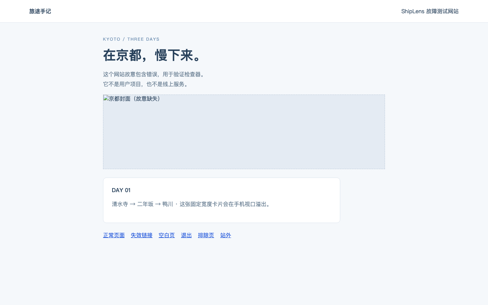
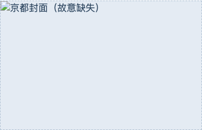
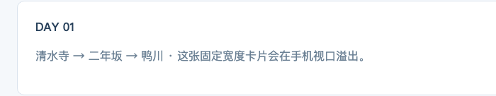

Error
http-errordesktopHTTP request failed
http://127.0.0.1:56128/
500 · fetch · http://127.0.0.1:56128/api/error
Full page evidence

Open original screenshot ↗2026-09-09T02:03:36.131Z · 5.1s
http://127.0.0.1:56128/
The same issue across desktop and mobile counts as one group. Observations retain evidence for each viewport.
http-errordesktophttp://127.0.0.1:56128/
500 · fetch · http://127.0.0.1:56128/api/error

Open original screenshot ↗runtime-errordesktophttp://127.0.0.1:56128/
Fixture: itinerary data is undefined
broken-imagedesktophttp://127.0.0.1:56128/
body > main > img · http://127.0.0.1:56128/missing.jpg · HTTP 404
Open element evidence ↗http-errormobilehttp://127.0.0.1:56128/
500 · fetch · http://127.0.0.1:56128/api/error
runtime-errormobilehttp://127.0.0.1:56128/
Fixture: itinerary data is undefined
broken-imagemobilehttp://127.0.0.1:56128/
body > main > img · http://127.0.0.1:56128/missing.jpg · HTTP 404

Open element evidence ↗horizontal-overflowmobilehttp://127.0.0.1:56128/
390px viewport. Suspected elements: body > main > div:nth-of-type(2) (right 724px), body > main > div:nth-of-type(2) > p (right 698px). Confirm whether this layout is intentional.

Open element evidence ↗http-errordesktophttp://127.0.0.1:56128/missing
404 · document · http://127.0.0.1:56128/missing
http-errormobilehttp://127.0.0.1:56128/missing
404 · document · http://127.0.0.1:56128/missing
page-emptydesktophttp://127.0.0.1:56128/empty
No visible text, media or controls after the configured readiness wait. Confirm manually or set --wait-for.
 Open original screenshot ↗
Open original screenshot ↗page-emptymobilehttp://127.0.0.1:56128/empty
No visible text, media or controls after the configured readiness wait. Confirm manually or set --wait-for.